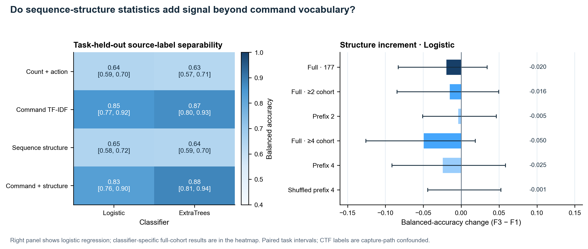
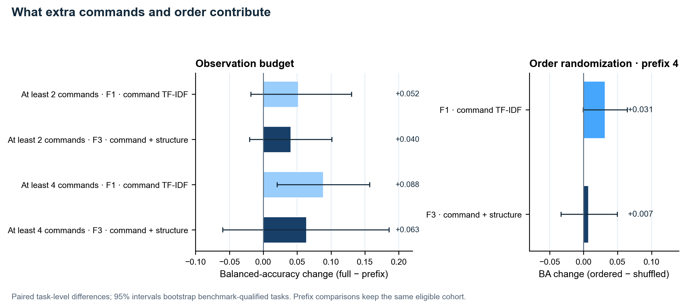
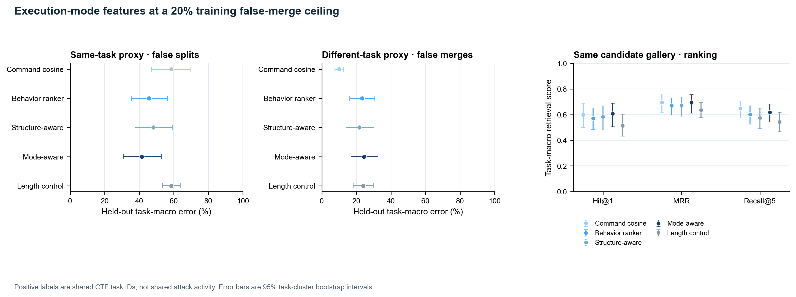
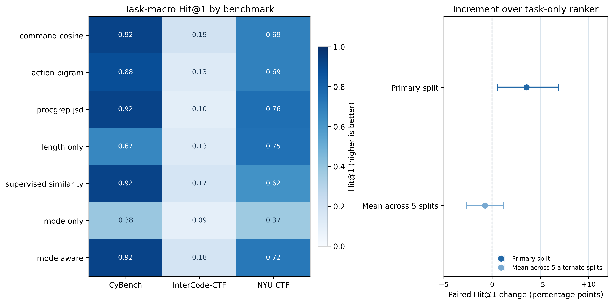
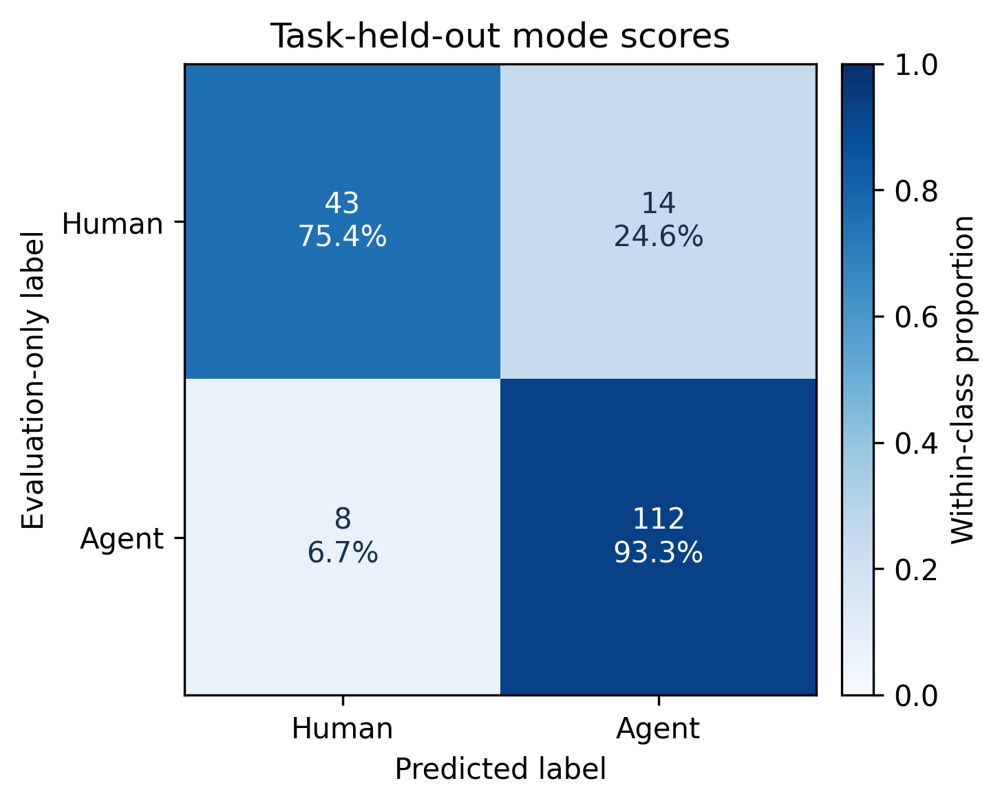
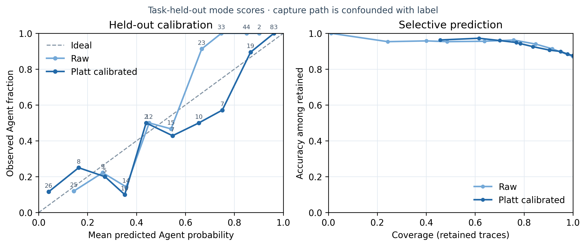
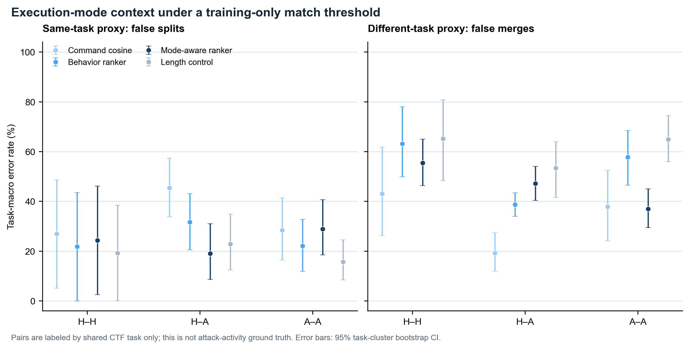

执行方式如何影响行为关联
挂接在 rank_candidates 与 predict_modes 下的研究：执行方式证据会在什么条件下改变轨迹关联？
研究目标
评估人类、脚本与 Agent 执行如何影响攻击活动关联。当前公开实验只有人类操作记录和模型 Agent 工具调用，没有匹配的脚本执行样本。
为什么研究这个问题：关联系统会连接审计行为、活动序列、TTP 和因果关系。2025 年公开攻击活动记录也描述了人类操作员协调 Claude Code Agent。我们检验执行方式是否能为这些关联提供有效上下文；案例提出动机，但不能证明现有关联已经失效。HOLMES · OSTINATO · MITRE C0062
识别信号。
关联代价。
三个公开 CTF 基准的 177 条轨迹、40 个题目组中，命令 TF-IDF 对发布数据 Human/Agent 标签的区分强于单独的结构统计。在训练误合并目标为 20% 时，加入模式分数使同题 Human–Agent 误拆分下降 12.7 个百分点、Hit@1 提高 3.6 个百分点；异题 Human–Agent 误合并则上升 11.9 个百分点。留出集实际误合并率分别为 24.5% 和 23.3%。
| 特征组 | Logistic BA | ExtraTrees BA |
|---|---|---|
| F0 · 数量 + 动作组成 | 0.643 | 0.635 |
| F1 · 命令 TF-IDF | 0.849 | 0.866 |
| F2 · 序列结构 | 0.648 | 0.642 |
| F3 · 命令 + 结构 | 0.828 | 0.880 |
按题目留出的平衡准确率；图中给出区间与配对特征增量。结构特征在逻辑回归中变化 −2.0 个百分点（95% 区间 −8.3 至 +3.3），在 ExtraTrees 中增加 1.4 个百分点（+0.3 至 +2.5）。



实验检验了什么
外层三折按 benchmark/task 整组留出。所有排序器使用同一个 Human/Agent 混合候选库，执行方式标签不筛候选。同题仅为同一挑战题的检索代理，不表示同一入侵或 campaign。
加入模式分数后发生什么
在训练侧选择的 20% 误合并目标下，模式增强排序比行为排序有更高 Hit@1，主要体现在更多同题跨模式配对被连起；但更多异题跨模式配对也被误连。命令余弦仍有竞争力，且留出集误合并率更低。
数据与解释
人类终端记录与 Agent 工具调用来自不同采集接口。数据没有脚本执行组，也没有独立攻击活动 ID。当前差异为统一遥测实验提供动机，不是现实 APT 关联错误率的估计。
较早的混合候选协议。
检索结果对划分敏感。
在 40 个 CTF 任务组的 177 条公开轨迹混合候选库中，预设主划分的模式感知排序 Hit@1 为 60.7%。相对任务监督行为排序器增加 3.6 个百分点（95% 任务簇区间 +0.6 至 +6.9 个百分点）；相对命令余弦只增加 0.8 个百分点（区间 −4.6 至 +5.9 个百分点）。五个替代划分相对任务监督排序器的增量均值为 −0.7 个百分点（−2.6 至 +1.2 个百分点）。
这项早期检索协议使用不同的划分汇总方式和阈值目标。结果保留供追溯，不与当前固定工作点实验合并。



Hit@1 是首位命中率：60.7% 表示任务宏平均下，首位候选命中同题标签的比例为 60.7%。+3.6 个百分点是 60.7% 与 57.1% 基线的绝对差值，不是相对提升 3.6%。
候选库里排的是什么
每条查询都是留出轨迹；候选库包括同基准留出折中的所有其他人类与 Agent 轨迹，不按执行方式筛选。评估器将同 benchmark/task ID 视为相关项；ID 只表示 CTF 题目相同。
每个查询平均有 29.3 个候选，随机 Hit@1 为 18.9%。主划分中，命令余弦为 60.0%，ProcGrep BPE/JSD 为 59.4%，任务监督行为排序器为 57.1%，模式感知排序为 60.7%。
为什么还不能称为稳定增益
相对命令余弦的 Hit@1 配对变化只有 +0.8 个百分点（95% 任务簇区间 −4.6 至 +5.9 个百分点）。五个替代划分中，模式感知减去任务监督排序器的变化均值为 −0.7 个百分点（−2.6 至 +1.2 个百分点），因此主划分的增量没有通过划分敏感性检查。
替代划分重复使用同一批 177 条轨迹，不是独立外部复现。任务簇区间条件于固定折与拟合结果，只作为划分敏感性的证据，不是部署效果估计。
这里的分类结果量到了什么
主划分混淆矩阵（Human/Agent 行）为 [[43,14],[8,112]]，按记录计算的平衡准确率为 84.4%；三折分别为 91.2%、88.3%、73.8%。人类标签来自终端记录，Agent 标签来自结构化工具调用，模型可能同时识别采集格式与行为。
这不是 APT 活动标签实验；结果不说明 Agent 导致关联错误，也不说明识别后恢复了真实 campaign 关系。仍需统一传感器及独立活动 ID。
训练侧阈值下的配对关联错误
嵌套任务留出阈值下，模式增强排序相对行为排序器将同题 H–Agent 配对误拆分降低 12.6 个百分点，却将异题 H–Agent 配对误合并提高 8.4 个百分点。任务宏平衡准确率较行为排序器提高 5.7 个百分点；相对命令余弦只提高 0.6 个百分点（95% 区间 −4.1 至 +4.8 个百分点）。

!公开 CTF 题目 ID 只是同题代理，不是活动同源标签；类别与采集接口混杂，且没有脚本轨迹。逐对误差率只能解释为挑战题层面的代理结果，不能当作真实攻击活动误关联率。
数据与方法
数据：Cyber Task Horizons · InterCode-CTF、CyBench、NYUCTF。固定版本：178c0da。
特征来自人类终端输入和 Agent bash 工具调用；提示词、题目文本、输出、模型名、时间戳和路径都不使用。300 次 Python 调用不纳入主特征。Python 库可标准化 Linux auditd EXECVE/SYSCALL 记录；暂不支持 Sysmon。混合候选实验使用 CTF 轨迹，同一题目 ID 仅是同题检索代理，不是活动标签。
从源码复现实验
当前可用：从源码复现
Python 3.10+，无需 Conda。下载固定版本轨迹，运行任务留出基线、原型，再重新生成论文图。PyPI 计划于 2027 年上线。
源码复现
git clone https://github.com/mcxiaoxiao/AttackAgentDetect.git
cd AttackAgentDetect
python3 -m venv .venv
.venv/bin/python -m pip install -r requirements.lock.txt
.venv/bin/python scripts/download_public_traces.py
.venv/bin/python scripts/download_crossbenchmark_traces.py
.venv/bin/python scripts/run_mixed_gallery.py --bootstraps 5000
.venv/bin/python -m unittest discover -s tests -v结果摘录 / results/*.json3 折任务留出 · 5 个替代划分
{
"traces": 177,
"task_groups": 40,
"gallery_candidates_mean": 29.3,
"mode_aware_hit_at_1": 0.607,
"primary_delta_vs_task_ranker": +0.036,
"five_split_mean_delta": -0.007,
"capture_path_confounded": true
}一份日志，不止一种执行方式。
从执行方式、行为信号到轨迹关联。示例命令来自 CyBench back_to_the_past 的公开轨迹。
同一个 CyBench 任务，两条真实轨迹。切换执行者，比较实际提交的命令。
back_to_the_past · agent公开轨迹命令提取线索🥷 Human
专家终端会话。解析器从键盘输入还原提交的命令，并丢弃中断的行。
source=expert terminal
session=332 · trace=e308264f
input=keystrokes🤖 AI agent
同一任务上的 Claude Opus 4.6。bash 工具调用给出结构化命令，并带有基于反馈的重试。
source=claude-opus-4.6
trace=a18eeb89
tool=bash命令截取自公开 CyBench 轨迹并做过清洗；提示词、输出、时间戳和路径均已省略。公开数据没有匹配的脚本轨迹，因此不展示 Script。
跨基准研究锁定公开轨迹版本，逐条审计记录，提取可比较的命令与动作特征，再按任务组留出评估。
- 固定版本Cyber Task Horizons 公开发布：InterCode-CTF、CyBench、NYUCTF 三套 CTF 轨迹，统一固定到同一版本。
revision=178c0da · CC BY 4.0 - 审计与配对177 条非空轨迹：57 条人类终端记录、120 条 Agent bash 记录。40 个同题任务组：InterCode 27、CyBench 6、NYUCTF 7。
matched_task_groups=40 - 提取特征特征只使用命令名和粗粒度动作序列；300 次 Python 工具调用不进入主特征，提示词、任务文字、输出和模型名也不参与。
cmd uni/bi · action bi - 混合候选评估按基准分层做三折任务留出；每条查询都在同基准、同留出折的所有其他 Human 与 Agent 轨迹中排序。区间来自 5,000 次任务簇 bootstrap；另用五个随机种子检查划分敏感性。
3 folds · 5 seeds · 5,000 bootstrap - 结果与边界在训练误合并目标 20% 下，模式增强排序使同题 Human–Agent 误拆分下降 12.7 个百分点，异题 Human–Agent 误合并上升 11.9 个百分点。同题相关性只是 CTF 题目代理标签，采集方式仍与执行模式混杂。
same-task H–A false split −12.7 pp · different-task false merge +11.9 pp
嵌套任务留出阈值 · 5,000 次任务簇 bootstrap
流程依据仓库脚本和结果 JSON 整理；运行 scripts/run_association_operating_points.py 可重算当前固定工作点实验。播放只展示步骤顺序，不代表运行耗时。
比较真实命令序列。轨迹相似只是检查线索，不能证明是同一攻击者。
比较命令序列
两条公开 CyBench 轨迹按命令步骤对齐。同题轨迹都先发现 .git，再用 git-dumper 导出仓库；异题轨迹一边是 Web 侦察，一边是二进制利用。
8 步命令为真实摘录。基准使用命令名和动作类别，不使用命令间时延；回放不代表时延测量。
模式 / 步骤
🥷 Human终端 · back_to_the_past
🤖 AI agentbash · claude-opus-4.6
step 01 / 08命令步骤选择场景，逐步回放 8 条命令。
公开 CTF 轨迹适配终端键盘输入和 Agent bash 调用；源码 CLI 也可标准化 Linux auditd 事件，但 auditd 暂无匹配的执行方式标签。
| 来源 | 可观测字段 | 执行上下文 | 预览 |
|---|---|---|---|
| 终端记录 | command, raw keystrokes | 🥷 Human | |
| 定时任务 / 批处理 | schedule, pid, exit_code | ⚙️ Script | |
| Agent bash 调用 | cmd, tool_call_id | 🤖 AI agent | |
| Linux auditd | SYSCALL, EXECVE, ses | 会话级轨迹 | CLI 可标准化 |
auditd 解析器会合并 SYSCALL/EXECVE 记录、按有效审计会话分组并汇报解析质量；目前通过格式 fixture 测试，尚未在已下载 CAM-LDS 归档上评估。尚不支持 Sysmon 与脚本执行方式分类。